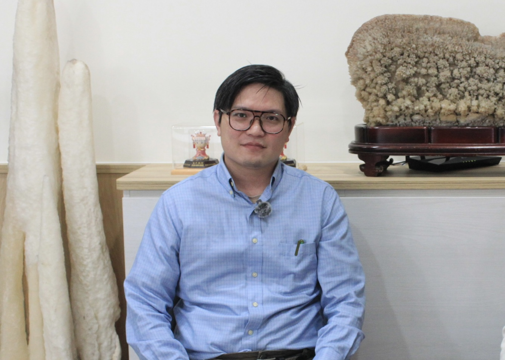

港口邊的造船現場：蘇澳港與龍德造船
從三鋼鐵工廠製作漁船引擎、支撐漁業運作的歷史，到全福造船廠以漁船和娛樂船為主的造船技術，蘇澳港邊的造船產業藴育了屬於南方澳的漁業文化和港邊產業，以及地方獨特的文化與記憶。而隨著時代變遷與技術的進步，蘇澳港的造船業也逐漸從傳統的漁業模式，轉向更大型、更高技術性的船舶製造，而龍德造船便是其中極具代表性的存在。
相較於過去主要修繕漁船和中小型船舶的傳統造船廠，龍德造船從2000年初期開始，為了因應傳統市場飽和、國際低價競爭的衝擊，逐步轉向客製化、高技術、高附加價值的船舶建造，並憑藉自主設計能力與鋁合金材料、高速船舶技術，發展現代化及國際化的造船業務。除了高速客船、巡防艇與公務船外，近年更配合國艦國造政策，投入軍艦與國防相關船舶的建造，成為臺灣少數具備高性能船舶製造能力的造船廠之一。
多年來，龍德造船提供了大量的就業機會，其團隊規模已成長至超過750人，涵蓋船舶設計研發、生產製造、品管試航、專案管理、採購供應鏈及工安行政等多元專業部門，吸引許多本地人與外地技術人員投入造船產業，而品保專案經理陳奕霖也是在港口產業環境中受益的一員。蘇澳港不僅是船隻停泊的地方，更是許多人打拼的工作場所，而這些留在岸上的工作者，也共同塑造了港口背後較少受到關注的產業樣貌。
從造船系到龍德造船：陳奕霖的職涯起點

「我本身是讀造船系的，所以工作的內容剛好跟所學相關，算是蠻幸運的。」在談到進入造船行業的原因時，陳奕霖的語氣平穩，卻能感受到他與這份工作的深厚連結。
不巧的是，他2007年從國立台灣海洋大學系統工程暨造船學研究所畢業，準備踏入職場時，正值全球金融危機，當時雷曼兄弟事件重創航運與造船市場，許多公司停止徵才，整體經濟環境非常低迷。他提到那時候找工作真的很困難，後來在系上教授的推薦下他加入了萬海航運，也開始接觸到船舶監造及建造流程的實務工作。
在萬海航運任職四年後，他轉往裕民海運，並在那裡任職同樣四年。在這八年裡，他主要在航商代表船東參與船舶監造，工作內容涵蓋閱讀船舶規範、審查設計圖及現場監造等流程，期間也因工作需求多次外派國外。最初在萬海航運時，他的工作主要集中在貨櫃船的建造與監造工作上；轉職裕民海運後，則開始投入散裝貨輪領域，透過不同船型的監造，他逐步累積了豐富的實務經驗。
雖然長期外派能拓展不同視野，但這也意味著必須長時間與家人分隔兩地，隨著孩子出生，家人定居宜蘭，他開始重新思考工作與生活之間的平衡，因此決定回到宜蘭發展。除了家庭的考量，龍德造船以鋁合金高速船舶及特殊船舶建造為主，與他過去接觸的鋼製商船截然不同，無論是材料特性、焊接技術或建造方式都有新的挑戰。對陳奕霖而言，加入龍德造船不僅能兼顧家庭，更是一次拓展專業能力的契機。進入龍德造船後，他一開始負責船舶檢驗工作，目前則擔任品保專案經理，主要負責ISO 9001品質管理系統的運作與維護，確保公司各項品質管理流程符合國際標準。
從圖紙到海試：一艘船如何被造出來
在外行人的認知裡，「造船」或許只是將鋼板組裝成船的過程，但實際上每一艘船都必須經過嚴謹且環環相扣的程序。
「一開始我們會先確認船東提出的規範內容，中間會一直跟船東討論、釋疑。」陳奕霖說，在確認需求後，造船廠會先制定基本設計圖並送交給船東審核；等圖說核定後，再繪製施工圖提供現場人員施工，接著才正式進入船體建造與各項檢驗工作。
剛進入龍德造船時，他主要負責船舶檢驗工作，他提到檢驗的內容大致可分為五個部分，包括船殼檢查、管路檢查、傾斜試驗、船上測試以及最後的海試。「船殼檢查主要是確認現場施工是否跟圖相同，焊道品質有沒有符合要求；管路檢查則是看管路施壓、強度是否足夠、有沒有洩漏，接著會做傾斜試驗，確認船舶穩度是否符合設計和法規要求，再透過船上測試確認主機、發電機及各項安全裝置都能正常運作。」
完成所有檢驗後，船隻才會進入海試階段。「海試就是把船開出去，測試它的船速、迴旋半徑，以及各項航行裝置是否功能正常。」他表示，海試不只是確認船是否能夠行駛，更是交船前最重要的驗證程序。
當被詢問到一艘船成功交付最關鍵的環節時，陳奕霖認為很難選出某一個步驟最重要。他解釋，如果一開始的設計圖有問題，那後續產生的施工圖就可能出現誤差，現場施作也容易跟著偏離。因此在他眼中造船從一開始的簽約規範、設計，到現場施作、檢驗，都是相當重要的。
品質與細節：品保如何守住一艘船的安全
在造船業中，品保的工作不只需要確認施工品質，其品質管理的範疇非常廣。陳奕霖提到：「一條船從設計到交船，其實每個階段都跟品質有關。」因此他的工作橫跨設計、生產、檢驗與管理等多個部門，幾乎參與了一艘船從開始到交付的每一個環節。
目前他主要負責ISO 9001品質管理系統的相關工作，從設計圖說、施工流程、檢驗紀錄到倉儲管理，都屬於品質系統的一部分。此外他也需要配合第三方驗證單位進行品質稽核，確保整個品質管理系統運作無虞。對於造船業而言，真正重要的不只是找出問題點，而是如何建立一套持續改進和管理的流程。
近年來環保意識興起，全球開始重視節能減碳，造船產業也面臨新的轉型壓力。龍德除了傳統的內燃機船舶外，現在也開始投入油電混合以及純電動船舶建造，同時透過優化船型和調整推進系統，降低油耗與碳排放。
這些改變不僅對設計產生影響，也讓檢驗與品保工作變得更加複雜。從新系統整合到設備測試，每個環節都需要重新制定標準和流程，促使造船產業逐漸走向更高技術的層次。
海上的工作與陸地不同：造船產業的辛苦與專業
「海上的工作，跟陸地真的不一樣。」提到造船工作的艱辛時，陳奕霖最先想到的，是海洋本身帶來的不確定性。
因為船最終要進入海域，所以從測試到海試的每一項工作都必須考慮到海上的環境，尤其到了外海後，海浪、風向和船體的搖晃都會直接影響到作業狀況。有些人在陸地上工作得心應手，一上船卻會因為劇烈晃動而暈船或感到不適。「有些人真的沒辦法適應，會一直吐。」他語重心長的說。
除了環境因素外，造船也是一個極度依賴經驗的產業。無論是設計、焊接還是檢驗與施工，每個環節都需要長時間的累積。陳奕霖說，這個行業需要有一定的程度，大約需要三到四年才能真正入門，而六、七年以上的經驗才能算是資深。
在他的職業生涯中，最難忘的仍然是第一次完整參與建造一艘船的過程。這種感覺不只是完成工作的成就感，更像是親眼見證一個巨大且複雜的作品逐漸成型的感動。
那些外界看不見的辛苦，往往隱藏在最細微的地方。可能是一整天待在高溫環境下施工，也可能是在海上反覆測試設備，亦或是為了確認一個數據而不斷重新審核。造船工作的專業，不只體現在船體設計中，更存在於那些需要長時間累積、卻鮮少有人注意的細節之中。
留在港口的人：造船與人生
長年在港口工作的陳奕霖，已經習慣每天看海的日子，在他眼中，港口不僅是工作的場所，也是生活的一部份。「如果離開蘇澳港，應該還是會不習慣吧，看海就沒那麼容易了。」
近年來，他也觀察到造船產業正在面臨人力不足的挑戰，無論是設計、焊接、監造或現場施工，都需要更多年輕人投入。最後，當被問到希望外界如何看待港邊工作者時，已經在造船產業工作17年的他停頓了一下才緩緩說道：「希望能多給我們一些尊重。」
從設計圖、焊道、檢驗到海試，陳奕霖與龍德造船的日常，默默支撐著蘇澳港的運作。而港口之所以能持續運行，不只是因為船會進出，更因為始終有一群人在岸上辛勤的工作，在一次次的測試、焊接與監造之間，把一艘船建造完成。
← 返回專題列表